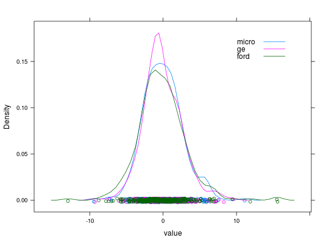
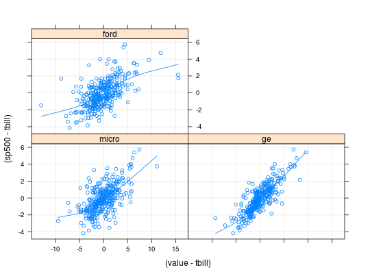

Dados referentes aos retornos diários das ações das empresas Microsoft, General Eletric (GE) e Ford no período de janeiro de 2002 a abril de 2003. No registro dessas ações também se dispõe da taxa de retorno livre de risco e do retorno do mercado, para padronizar as comparações.
Um data.frame com 311 observações e 5 variáveis.
tbillsp500microgefordPAULA (2004), Exercicío 1.13.24, pág. 112.
data(PaulaEx1.13.24)#> Warning: data set ‘PaulaEx1.13.24’ not foundstr(PaulaEx1.13.24)#> 'data.frame': 311 obs. of 5 variables: #> $ tbill: num 0.00672 0.00668 0.00664 0.00656 0.00652 ... #> $ sp500: num 0.918 0.621 -0.65 -0.359 -0.48 ... #> $ micro: num 3.262 -0.464 -0.495 1.2 -0.983 ... #> $ ge : num -0.833 0.84 -3.888 -1.051 -1.035 ... #> $ ford : num 3.16 1.25 -2.59 0.38 -1.51 ...library(reshape)#> #>#> #> #>da <- melt(PaulaEx1.13.24, measure.vars = c("micro", "ge", "ford"), variable_name = "empresa") library(lattice) densityplot(~value, groups = empresa, data = da, auto.key = list(corner = c(0.9, 0.9)))xyplot((sp500 - tbill) ~ (value - tbill) | empresa, data = da, type = c("p", "smooth", "g"))